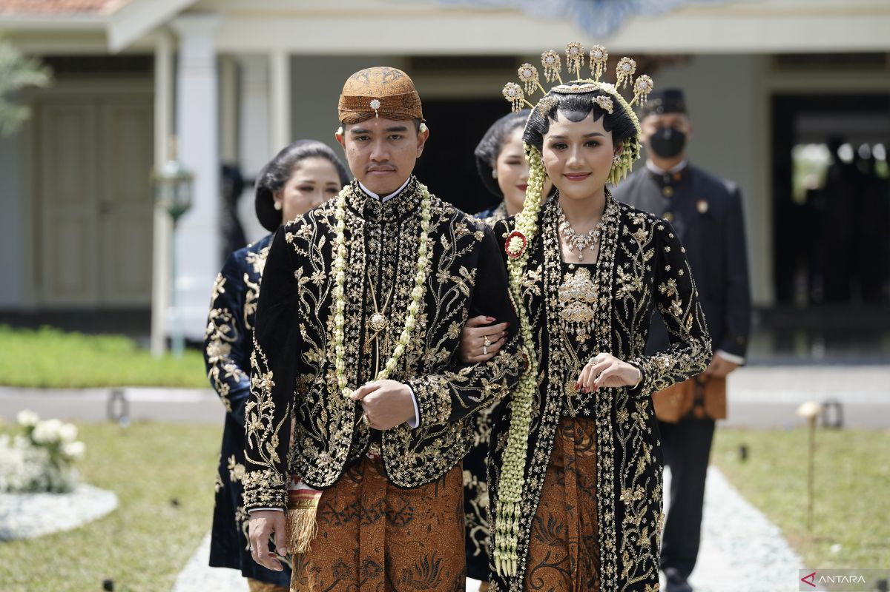
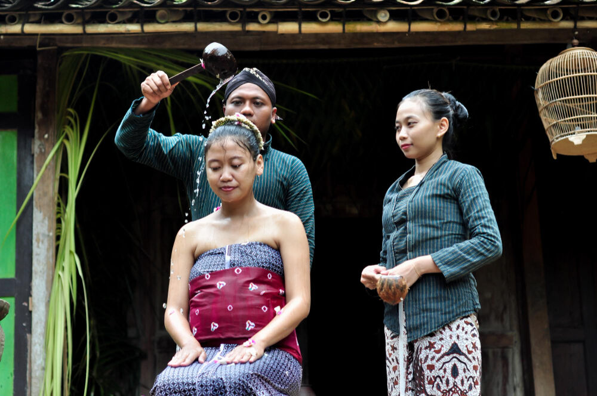
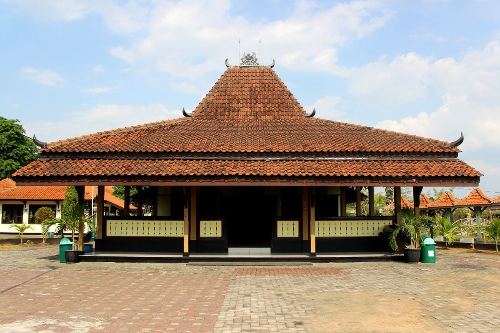
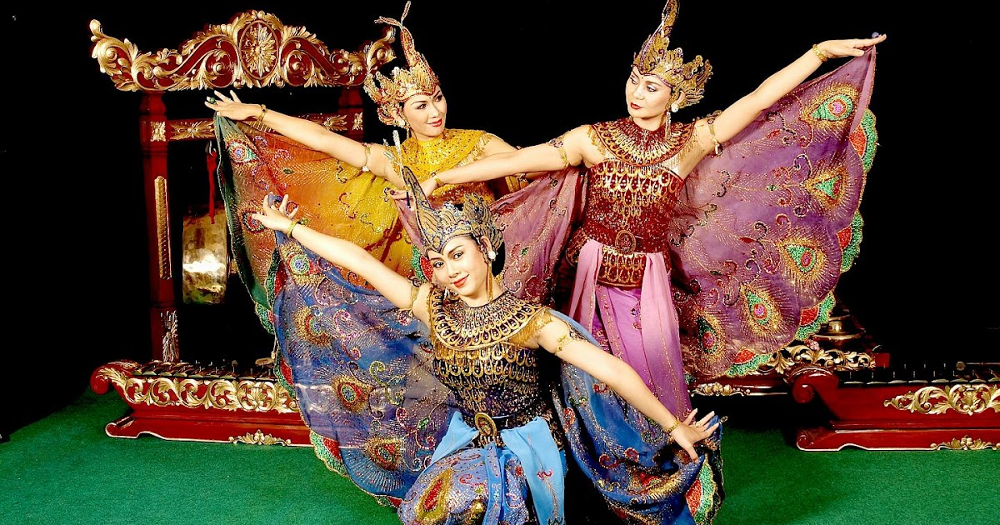
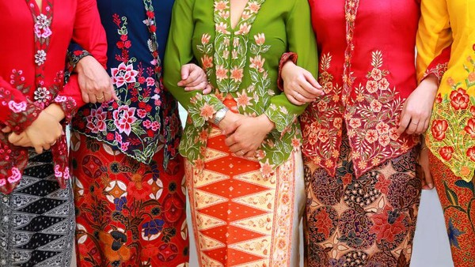
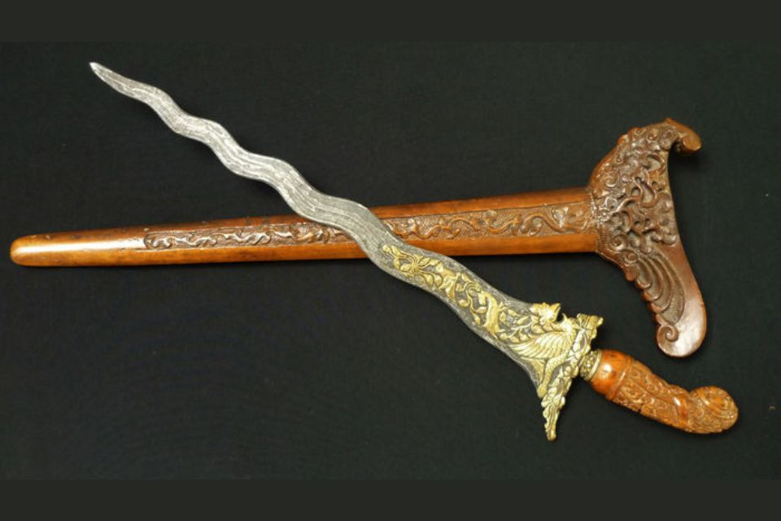
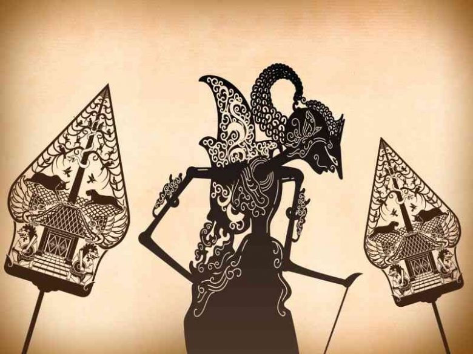
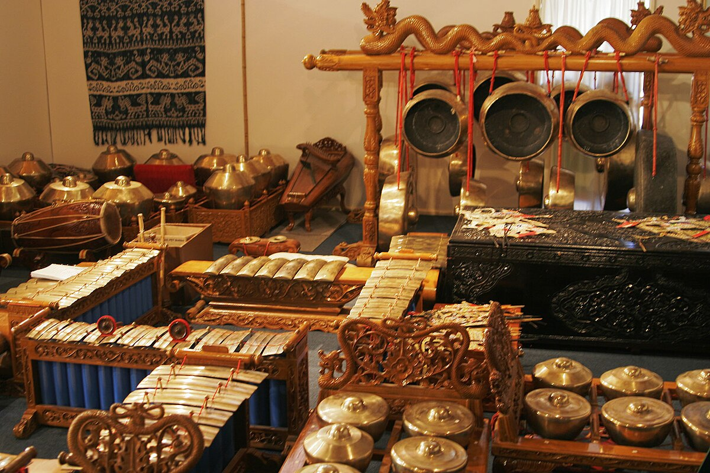
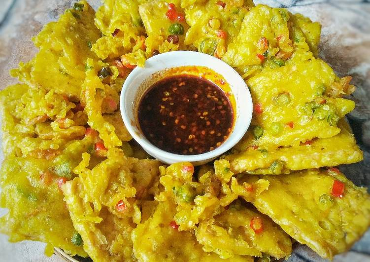

Lihat keindahan Jawa Tengah dalam gambar










Saksikan keindahan alam dan budaya Jawa Tengah, ditemani alunan Gamelan yang menenangkan.
Video ini menyajikan kolase visual yang memukau dari berbagai sudut Jawa Tengah. Anda akan diajak menyelami megahnya Candi Borobudur , sejuknya kawasan Dieng, hingga riuhnya aktivitas di sentra batik. Setiap adegan dirancang untuk membangkitkan rasa ingin tahu dan kekaguman terhadap kekayaan provinsi ini.
Dengarkan lantunan musik tradisional Gamelan, sebuah warisan adiluhung yang menciptakan suasana damai dan meditatif. Musik ini adalah jantung dari banyak upacara adat dan pertunjukan Wayang Kulit.
Lihat keindahan Jawa Tengah dalam gambar









Deskripsi Lengkap Gambar